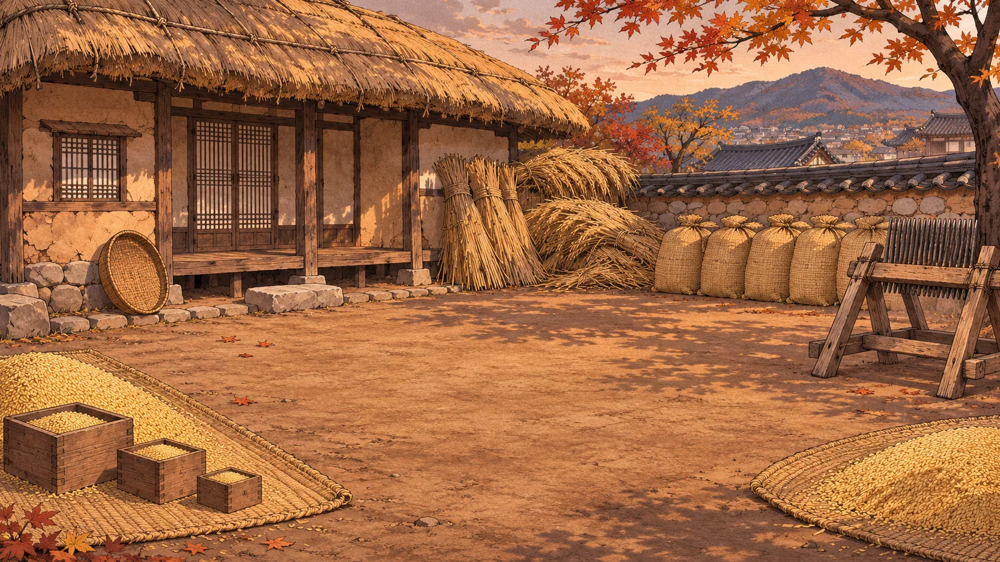
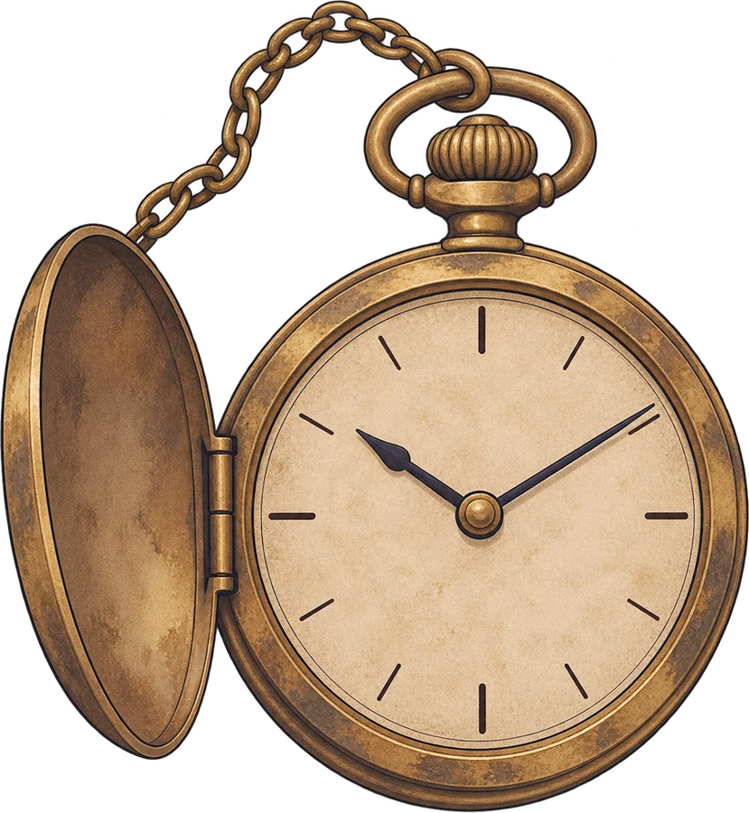

D-100
 0가마
0가마장학생
의심
목표


되질 감시
미니게임 · 되질 감시
속임수 되를 찾아라
동척 감독이 소작료로 쌀을 되로 퍼 간다. 그런데 되 하나가 몰래 더 크다.
- 되 세 개 중 조금 더 큰 되를 찾아 누른다
- 찾아내면 쌀 한 가마를 지킨다. 놓치면 한 가마를 더 빼앗긴다
- 모두 다섯 번. 눈치가 높으면 시간이 늘고, 큰 되가 살짝 빛난다

짐 나르기

가마니가 지게 위에 왔을 때 화면을 눌러 내려놓으세요
화면을 눌러 계속
알고 가기
화면을 눌러 계속

형사를 따돌려라
미니게임 · 골목 추격
집 대문까지 도망쳐라
- 빛나는 동그라미를 눌러 옆 골목으로 한 칸 움직인다
- 윤재가 움직이면 사토 형사도 한 칸 따라온다. 네 번에 한 번은 두 칸을 뛴다
- 장독대·짚더미 같은 곳에서는 숨기를 쓸 수 있다. 형사가 잠시 길을 잃는다
- 체력이 4 이상이면 전력 질주로 한 번에 두 칸 갈 수 있다

화면을 눌러 계속


1화 끝
공부만 잘하면 돼
생각해 볼 질문
눌러서 닫기

화면을 가로로 돌려 주세요